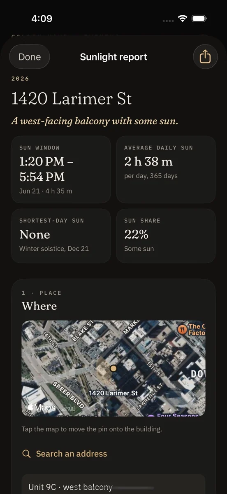
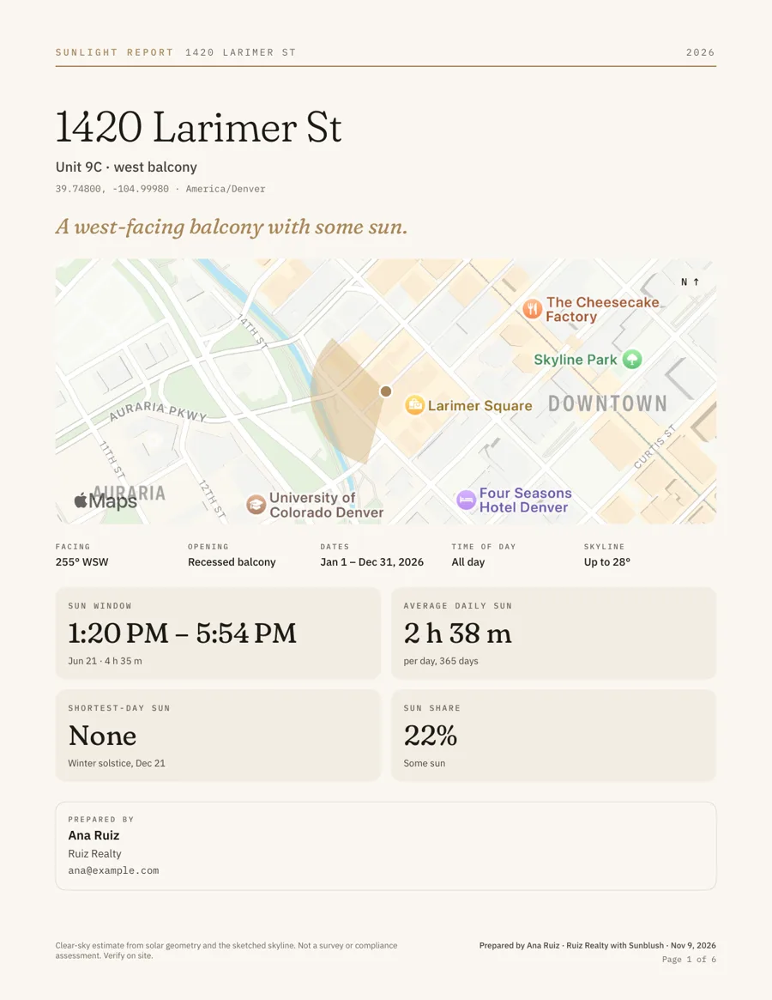
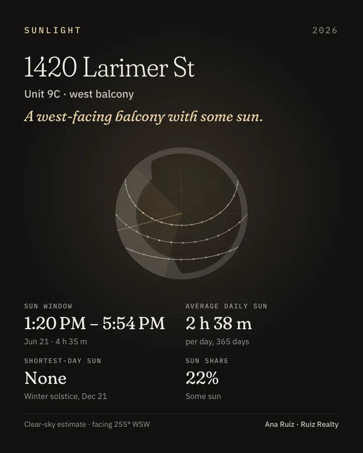

Sunlight Reports · Sunblush Pro
When does this place get sun?
Pick a balcony, a window or a garden, the way it faces and a stretch of the year. Sunblush works out when direct sun reaches it, day by day, and turns it into a report you can keep or share.
Download on the App StoreFree to try. Full reports are part of Sunblush Pro.

What a report tells you.
- The sun window. The first and last minute of direct sun on any day you choose.
- Average daily sun. Hours of direct sun per day across the range, from a season to a full year.
- The shortest day. Whether the place sees any sun at the winter solstice, and for how long.
- What gets in the way. Sketch the buildings or trees that block the view, and the report leaves that time out.

For homes and listings
A PDF made on your phone.
Export the report as a PDF with your name or your agency's on it, or as an image sized for a listing. Nothing is uploaded: the report is built on your iPhone or iPad.
Useful before you sign a lease, when you plan a garden, or when you show a buyer what the balcony is like in December.

How it is worked out.
Reports come from the sun's path for the place and dates you pick, under clear skies. They are an estimate of when direct sun can reach the spot, not a record of the weather, and they are not a certified survey.
Free shows the headline figures. The full report, PDF export and listing image are part of Sunblush Pro.